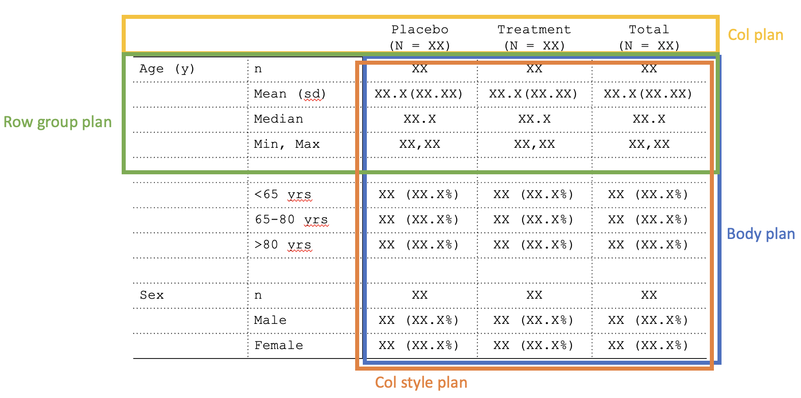

1. Table format: tfrmt()
The table format (“tfrmt”) object is the most fundamental building block in tfrmt. tfrmt is a way to predefine the non-data components of your tables and how the data will be handled once added. tfrmt allows you to specify cell formats and labelling such as column headers, footnotes, etc. In addition, tfrmts can be layered.
2. Plans: *_plan()
Much of the tfrmt is divided into “plans” which provide the blueprint for how the table will look. These plans are as follows:
- Body plan (
body_plan): define how cells will be formatted - Column plan (
col_plan): define column and spanning headers, order columns, and drop unnecessary columns - Row group plan (
row_grp_plan): define labelling for groups of rows and add styling to groups of rows - Column styling plan (
col_style_plan): define how column values will be aligned and set their widths

Additional features that use this system:
- Footnotes can be specified via footnote plan
(
footnote_plan) to define what footnote contents and where they should be applied. - Pagination can be specified via a page plan (
page_plan) to define where the table should be split for separating onto multiple pages.
3. Structures: *_structure()
The structure objects are for defining how the location of
where a specific styling should be applied. Within a plan, one or more
structures may be provided. Each structure specifies the layers within a
plan. For example, in the body plan, each “frmt_structure” object
defines how a set of values (e.g., all “p-values”) should be formatted.
Structures are primarily row-oriented, and can range from broad (e.g.,
apply to all relevant rows in the data) to specific (e.g., apply to all
relevant rows within a specific grouping value). The one exception to
this is col_style_structure, which specifies the colwise
styling.
In the figure below, each colour represents a different format
structure (frmt_structure) to be passed in the table body
plan (body_plan).

The following structures are available:
- Format structure (
frmt_structure) inside of body plan (body_plan) - Column label spanning structure (
span_structure) inside of column plan (col_plan) - Row group structure (
row_grp_structure) inside of row group plan (row_grp_plan) - Column style structure (
col_style_structure) inside of column style plan (col_style_plan) - Footnote structure (
footnote_structure) inside of footnote plan (footnote_plan) - Page structure (
page_structure) inside of a page plan (page_plan)
4. Elements element_*() and
Formats: frmt_*()
The element and format objects are for defining the
aesthetics of the table. Inspired by ggplot2, elements provide
a mechanism for performing aesthetic modifications such as numeric
rounding (frmt()) or the positioning of group labels
(element_row_grp_loc). These are passed through structure
objects.